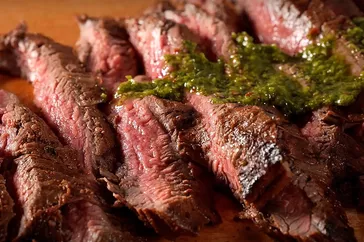

Carne Asada Marinade

Description
A 24-hour soak in a spicy citrus and soy marinade ensures your flank steak will be perfectly tender when it comes off the grill.
Ingredients
- ¾ cup orange juice
- ½ cup lemon juice
- ⅓ cup lime juice
- 1 bunch fresh cilantro, chopped
- ½ cup soy sauce
- 4 cloves garlic, minced
- 1 tablespoon chili powder
- 1 tablespoon ground cumin
- 1 tablespoon ground paprika
- 1 tablespoon ground black pepper
- 1 teaspoon finely chopped canned chipotle pepper
- 1 teaspoon dried oregano
- ½ cup olive oil
Steps
- Combine orange juice, lemon juice, and lime juice for marinade in a large glass or ceramic bowl. Add cilantro, soy sauce, garlic, chili powder, cumin, paprika, black pepper, chipotle pepper, and oregano; stir to combine.
- Slowly whisk in olive oil until well combined. Remove 1 cup of the marinade and place in a small bowl; cover with plastic wrap and refrigerate for use after the steak is cooked.
- Place steak between two sheets of heavy plastic (resealable freezer bags work well) on a solid, level surface. Firmly pound steak with the smooth side of a meat mallet to a thickness of 1/4 inch.
- After pounding, poke steak all over with a fork. Place steak in the marinade in the large bowl, cover, and marinate in the refrigerator for 24 hours.
- Cook steak and enjoy.